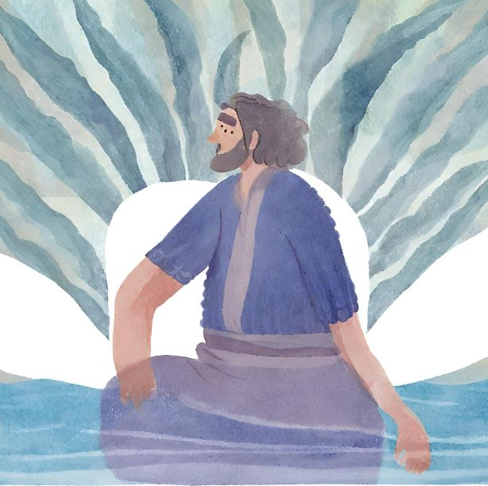

Designed and built by Delroy Barnies
JONAH

Jonah 1:14-15 MSG
[14] Then they prayed to God, “O God! Don’t let us drown because of this man’s life, and don’t blame us
for his death.
You are God. Do what you think is best.” [15] They took Jonah and threw him overboard. Immediately, the
sea quieted down.
Sometimes, we find ourselves in a spiral of events that we have not created or caused. Some of the
trouble you find yourself faced with sometimes has nothing to do with you.
It is by association with others that you find yourself stuck in entrapments. (friends, family, loved
ones, relationships)
Jonah was running away from the task that God was giving him; he feared going to speak to a community of
people that he knew were stiff-necked people. The city of Nineveh was a city of ungodly people, and God
wanted Jonah to deliver the message.
He was running away from Nineveh, and some people welcomed him on board.
The sea immediately became rough; these people knew that through their association with him, they were
in trouble.
These sailors prayed and asked God to do what is best. So many times we think helping others is the best
way, and I am not saying don't help, but there comes a time when you have to let go and trust God in
that situation... "You know the situation you are faced with today."
My prayer today is for God to teach spiritual discernment when we allow people in our lives.
To give us strategy and direct our footsteps when faced with trouble.
At times the trouble comes from our very own family and friends.
Whichever way the trouble comes, I pray God's wisdom is at work and that we take heed and let go, that
we don't try to take matters in our own hands but seek God and have faith in the process.
"They threw Jonah overboard immediately, and the sea quieted down.
They had discernment and prayed about it and immediately cut loose from Jonah.
We become so attached emotionally to our loved ones, and we become the victims in their stories. We sin
against God when we want to protect everything instead of letting go and letting God, trusting in His
process. If God wants you to walk away from that family member so that He can help them on their journey
of becoming, it is important that you let loose.
By prayer and discernment, the sailors threw Jonah overboard. Many times it feels like the wrong thing
to do because as people we want to help, it seems right to do so.
Jonah was swallowed up by a whale afterward, this was a miracle in the middle of the storm. In the
middle of Jonah running away from purpose, he was met with a miracle. The whale was sent to transport to
the place where God wanted him.
So Jonah traveled in the belly of the whale, reached his destiny and fullfilled purpose. Can you imagine
if he was not thrown overboard, can you imagine if the sailors conformed to the pattern of the world and
didn't eventually pray to get a resolution...
That entire ship with the sailors could have overturned.
The Shulamite.